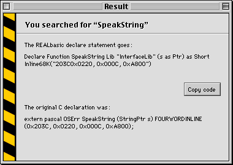

API Access
By Dan Vanderkam
REALbasic has had quite a few improvements and exciting new features since the last issue of RBM, but I've found that API Access is probably the biggest. API Access lets you add commands to RB that let your programs do things that weren't possible before—and all without a plugin.
However, it's hardly a simple matter to do this. Extremely useful, but not extremely simple—a perfect topic for our last Cover Story!
Defining the Command
The Macintosh Toolbox is made up of thousands of commands. These commands let programs do almost everything that they do—access files on the hard drive, draw windows, or even beep. When you use RB's beep command, REALbasic executes the SysBeep command, which is part of the API. As of 2.0.1, you can directly call these methods (like SysBeep), and they can greatly improve your program. The first step is to let REALbasic know that they exist. This is done with a Declare statement.
Any user of Visual Basic will be instantly familiar with the Declare statement. It works exactly like VB's. For those who have used only RB though, it's a bit bizarre. Here's an example:
Declare Sub SysBeep Lib "InterfaceLib" (duration as Short)
While this seems to be rather cryptic and illegible, it makes some sense once you know what to look for.
The first part of the line is Declare Sub. This lets RB know that you're setting up an API call. It could also be Declare Function, but we'll get to that later.
The next part is the name of the API call. In this case, the name is "SysBeep", so we just type in SysBeep. This part is quite picky, because you need to type in the exact name–even case matters.
After this comes the library section. The Mac Toolbox is split up into several libraries. All of these libraries contain commands for doing related things, such as drawing window and controls, speaking, or 3D rendering. The Lib section of this command tells RB which library our particular API call is in. For almost all commands, this is InterfaceLib, so Lib "InterfaceLib" will work just fine.
The next part is in parentheses, and should look familiar. Whenever you make a new method in RB's code editor, there is a line that says Sub methodname (parameters) as returnType. Just as in this line, the section in parentheses is for parameters. In this particular case, there is one parameter–duration. It's type may not be familiar, but we'll also get to that later on.
That's what makes up the declare line. RB now knows how to call the SysBeep method, but you might not. So, it's time to learn.
Using the Command
Once you've declared the API call, using it could be as simple as one line, or it could be very complex. It all depends on what the call is, and what types of parameters it has.
If you create a method in RB, you can just call it by typing out it's name, followed by a list of parameters. API calls work the same way. So, to use this command, we type out its name (SysBeep), and then parameters.
In the case of SysBeep, there's only one parameter: a Short. Short is basically what the toolbox uses for integers, so we could just use a number like 1 for this. In fact, that is what we'll use. Now, we should have this code:
Declare Sub SysBeep Lib "InterfaceLib" (duration as Short)
SysBeep 1
If you put this code in a button, and then press it, you should hear a beep. If you do, keep going. If you didn't, make sure you typed in the code correctly, and are using a fairly new version of RB.
Other parts
This command works, but it will only work on a PowerPC. This may be considered acceptable by some people, but they're probably also the type of people who believe that everyone uses a G3 running OS 8.6. To add support for 68k Macs, we'll need to add one more section to the Declare line: Inline68k.
This section is definitely the most cryptic of them. It goes right at the end of the line, which makes the Declare line look like this (the new part is in bold for your enjoyment):
Declare Sub SysBeep Lib "InterfaceLib" (duration as Short) Inline68K("A9C8")
Like I said, it's cryptic. As you may have noticed, the four characters that we put in there are hexadecimal–base 16. Did we just pull these out of a hat? No, but it might look that way–especially for calls in which this section is 24 digits long.
TBFinder
When accessing the API, there is one program that you absolutely need to have. It's called TBFinder, and is written by Fabian Lidman. It's available at http://home.swipnet.se/~42040/rb.html.
What does this do that makes it so great? It lets you just type in the name of the call (SysBeep), and it will automatically spew out the cryptic code to declare it. Sometimes, it'll even give you comments on how to use the call.
Without this, finding and translating an API call is a tedious process that you need to do with a word proccessor. So why bother? Just use this!
Finding a Call
TBFinder will convert the API call to RB code, but it can only do this if you know the call's exact name. And when some calls are as bizarre sounding as SRPutLanguageObjectIntoHandle, your odds of guessing one aren't very good. How do you find them then? You'll need a copy of the Universal Header files. These come with programming applications such as CodeWarrior, which need them to do more than RB does. Because they come with CodeWarrior, they're written in C, the most widely used programming language for macs. This means that the declarations might be somewhat hard to find in them. However, if you know what to look for, it won't be that bad.
First of all, get a copy of the Universal Headers. There's a fairly new one at the TBFinder site, and it will suit our purposes nicely.
When you have it, open the file "speech.h" in a word proccessor. Now do a search for "extern pascal". Extern Pascal is just the C version of Declare Sub. So, every API call will start with it. As in RB, it's followed soon after by the call's name, and that's what we want.
One of the lines should say "extern pascal OSErr SpeakString". This is the one we want. This command takes a string, and says it (if PlainTalk is installed). So, in order for our program to work, it should actually speak a string.
Now that we have to command, we can type it in TBFinder. It should spit out:
Declare Function SpeakString Lib "InterfaceLib" (s as Ptr) as Short Inline68K("203C0x0220, 0x000C, 0xA800")
Among other things, this showcases a bug in TBFinder–the Inline68k section will give you an error if you leave it like this. Take out teh commas, spaces, and "0x"s from it, and it will be OK. This is what our code should look like:
Declare Function SpeakString Lib "SpeechLib" (s as Ptr) as Short Inline68K("203C0220000CA800")
This differs in a few ways from the SysBeep command. It has a different type of parameter (Ptr), and it returns something. If it returns something (ie, it has an "As " part after the parentheses) then we need to use Declare Function instead of Declare Sub. It also has a significantly longer Inline68k part–16 digits.
We already know how to use a Short, but the Ptr type isn't something we've encountered before. As it turns out, this is the most pesky data type in an API call, because it can be just about anything.
Pointers
When an API call asks for a Ptr, we need to give it a memoryBlock object. These are created with the newMemoryBlock function, and are essentially a block of data that is a given length. If the API call in C asks for a data type that RB doesn't understand, then we need to use a Ptr. In this particular case, The original type (in the Universal Headers) was StringPtr. Fortunately, this type of data is fairly easy to create.
The StringPtr type is a Pascal String (aka PString). These are commonly used for storing data that isn't a fixed length. The way they work is simple. The first byte is the length of the string, and the rest of the bytes are the actual string. So for example, if the string were "Hello!", a PString of this would be Chr(7)+"Hello!" (Hello! is 7 characters long). So, to store a 7 letter string, we need 8 bytes of space (the length byte and the string).
MemoryBlocks provide a method for creating PStrings, which is called PString (appropriately enough), so this aspect is easy. Here's the code for putting this data into the memoryblock:
dim m as memoryBlock
m=newMemoryBlock(8)
m.PString(0)="Hello!"
The first line tells RB that we'll be using a memoryBlock called m. The next line tells it to reserve eight bytes of space for this (this was how much space we decided we'd need earlier). The last line tells it to put a PString of "Hello!" into the first position of the memoryBlock–zero.
Now, we can jut pass m where the API call asks for a Ptr.
Putting it all together
Now that we have something to pass to the SpeakString command, it's fairly easy from here on out. If you remember our Declare line, it returns a Short. So, we'll also need an integer to store this in. Here's the complete code:
dim m as memoryBlock, e as integer
Declare Function SpeakString Lib "SpeechLib" (s as Ptr) as Short Inline68K("203C0220000CA800")
m=newMemoryBlock(8)
m.Pstring(0)="Hello!"
e=SpeakString(m)
Now, put this in a button and click it. You should hear your computer say Hello in the default voice. Unlike the beep example, RB doesn't have a SpeakString command. We've just added a useful feature to RB without any plugins!
Extra Types
There's a way that the last example could have been made a lot easier. The SpeakString command accepts many data types as parameters that RB wouldn't usually allow. One of these is PString. So, if we changed the declaration from (s as Ptr) to (s as PString), we wouldn't have had to do all of the memoryBlock mess. Don't kill me yet though–it was good for you! =)
If we change the type to PString, we can just pass the SpeakString command an ordinary string, not a memoryBlock. So here's what the new code is:
dim e as integer
Declare Function SpeakString Lib "SpeechLib" (s as PString) as Short Inline68K("203C0220000CA800")
e=SpeakString("Hello!")
This is a much nicer way of speaking text.
Wrapping it all up
You can now access the API! The calls that we've used have been fairly simple, but most API calls are a bit more complicated. Many of them have very strange data types. Here are how to use some of them:
| C Type | What it is, and how to use it |
| OSErr | Basically an integer. Make a one byte memoryBlock, and use the byte(0) property to set/read its value. |
| Str255 | A type of string. Just use PString for this one. This can only be 255 chars long. |
| Str63 | Another type of string. Use PString for it too. This can only be 63 chars long. |
| GrafPtr | In the declare line, use WindowPtr. Then, just pass it a window (eg, Window1). |
| WindowPtr | Same as GrafPtr |
| StringPtr | We had this in the speech example. Use a PString |
| CStr | Just like a PString. Use CString instead of PString though. |
| long | Another type of number. Make a four byte memoryBlock, and use the long(0) property to set/read it's value. |
| float | It's the same as RB's single type. Make a four byte memoryBlock, and use the single(0) property to set/read it. |
| OSType | A four letter string. Make a four byte memoryBlock, and set each byte (0,1,2,3) to the ASCII value of each character (ie, TEXT=84, 69, 87, 84) |
| void | This just means that there are no parameters. Don't pass anything to it. |
| char | A one byte memoryBlock. Byte(0) is the ASCII value of it. |